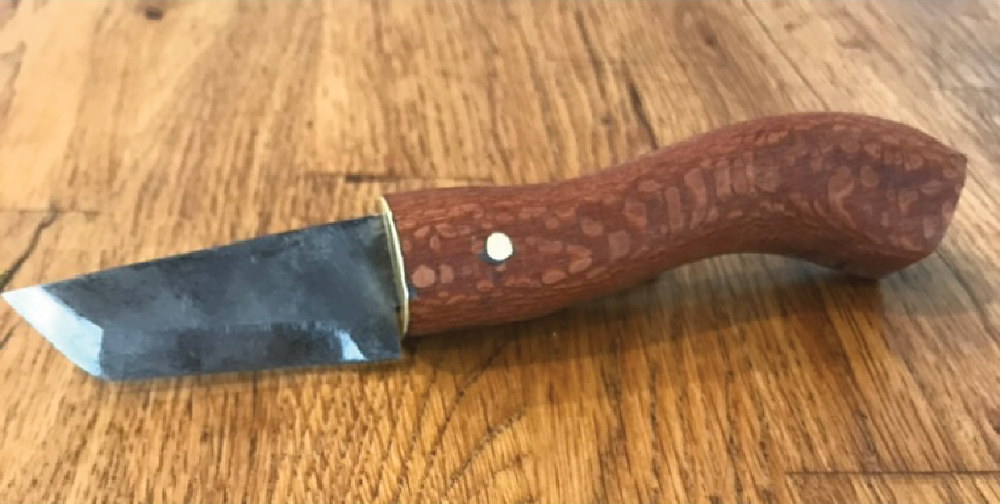

Pattern & Texture
Surface · Material · Finish View projects →
Structural Form & Flow
Structure · Proportion · Movement View projects →
Bioengineering student at Northeastern University. Interested in the intersection of material craft and engineering design.

My interest in creating things began through a piece of nature we called The Fort. Growing up, I had a creek near my house where all the neighborhood kids would gather to build forts, mold rudimentary pottery from the natural clay, attempt to fish, and create entire hierarchal societies, complete with organized power systems and the protection of private property. I was 7, no one was older than 12. Our central dogma consisted of just one unbreakable rule: all the forts, tools, and objects we created were to be from the creek and its natural surroundings, from scratch. To progress in this society, resourcefulness and usefulness were the most important traits.
As the inevitable years came and went, the older kids grew up and grew out, but I still spent time down there trying to perfect the primitive creek arts. I became sort of obsessed with building things from scratch. At around age 12 my workshop migrated from the creek to the family garage, and I discovered YouTube. I became interested in metals — looking at the world around me, I saw that it was metal and tools that were responsible for bringing us from creek-level sophistication to the luxuries of modernity. I used a Dremel tool to make knives from old saw blades, built foundries and forges from fires with makeshift bellows, took blacksmithing classes, and forged a knife from a bar of steel using no power tools. I made a recurve bow from a pair of skis.
I still had an urge to create, and I loved metal, so I began taking jewelry making classes at my local community college. The pandemic came after my freshman year, and I spent the time setting up a humble studio in my new garage, teaching myself to make my own clothes, work with leather, and generally branch out from metalwork. I started to take on more of an interest in all types of created things. Looking back, I see this time as when I began to use my hands not just as an exploratory pastime, but also expressively.
I returned to formally pursuing jewelry for the last half of high school, and around this time began applying to colleges. Because I was decent in math and physics and I liked working with my hands, engineering seemed like the obvious choice. I chose bioengineering because, in an abstract way of putting it, I was interested in how we — how our bodies — interact with what we create.
Northeastern University, B.S. Bioengineering · Concentration in Medical Devices and Bioimaging · Expected May 2027
Currently on co-op at MIT Traverso/Langer Laboratory (L4TE)